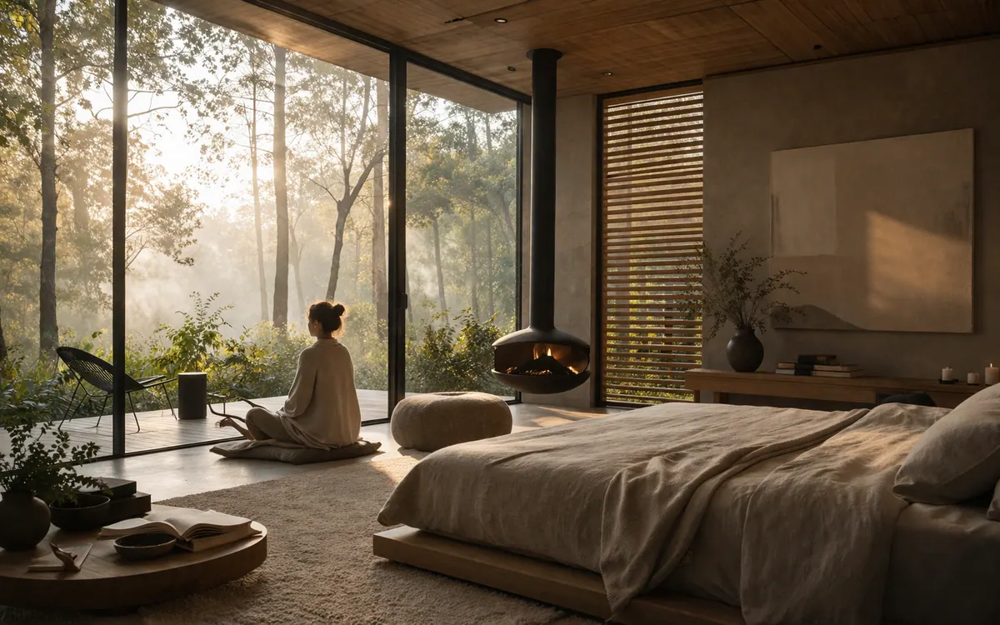

Elite Environment / Wellness
Audience Profile
Holistic Wellness
For facilitators, practitioners, retreat brands, and integrative spaces
This audience needs more than beautiful language and a calm setting. It needs embodied regulation that can be transmitted inside real sessions, retreats, certifications, and practitioner-client relationships. Frequency work helps wellness professionals move from concept to coherent presence.
- Strengthen practitioner embodiment so clients feel safety, clarity, and grounded leadership.
- Equip retreat leaders with tools for regulation, containment, and deeper transformation.
- Create a more advanced nervous system language inside wellness brands and teams.
- Support certification pathways for people who want to integrate the methodology long term.
Best service fit: Obsidian Retreats for immersive transformation, or Certification for practitioners who want to carry the method into their own work.